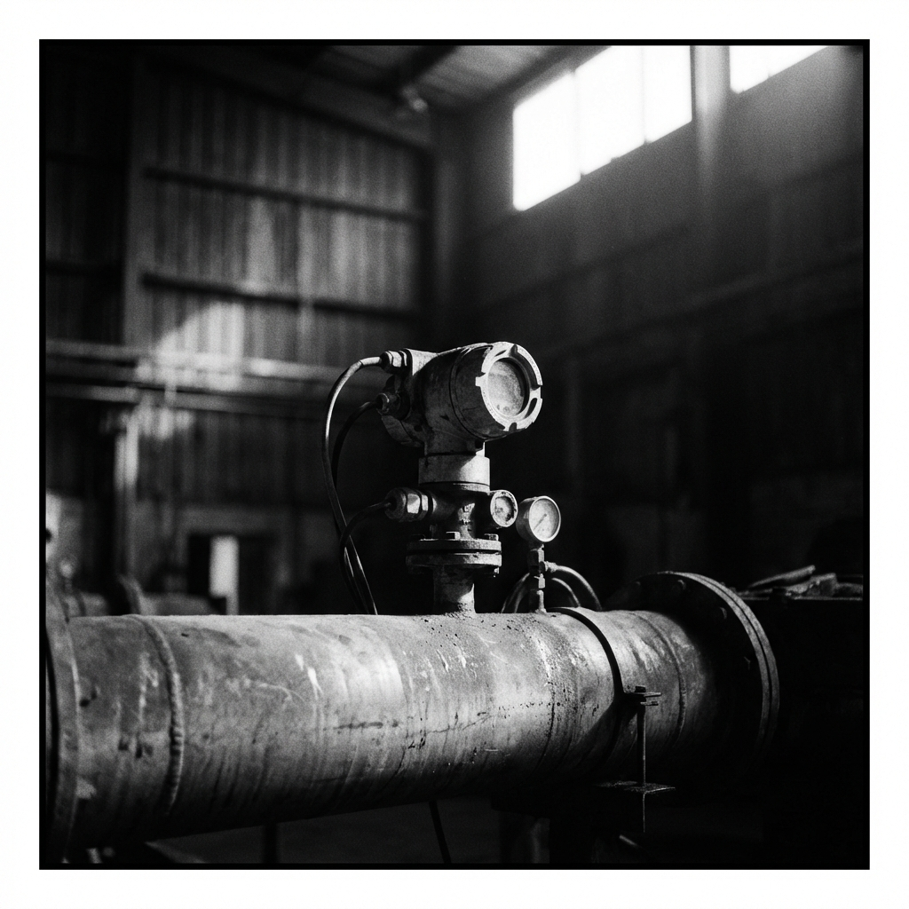
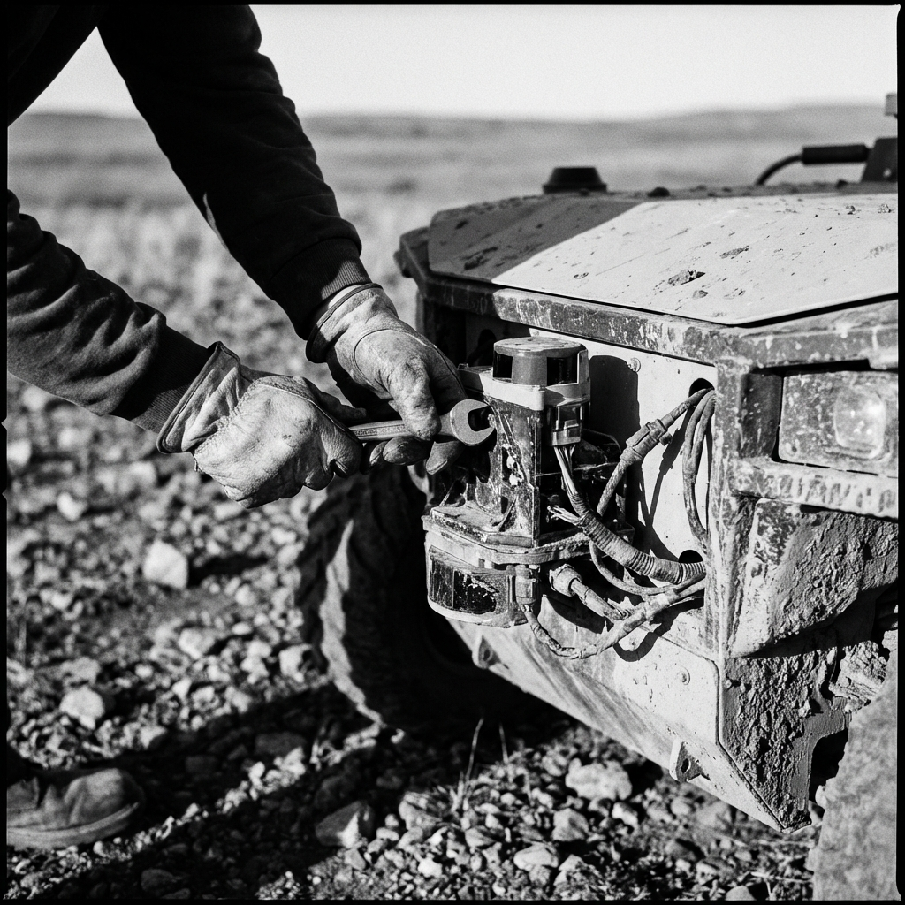
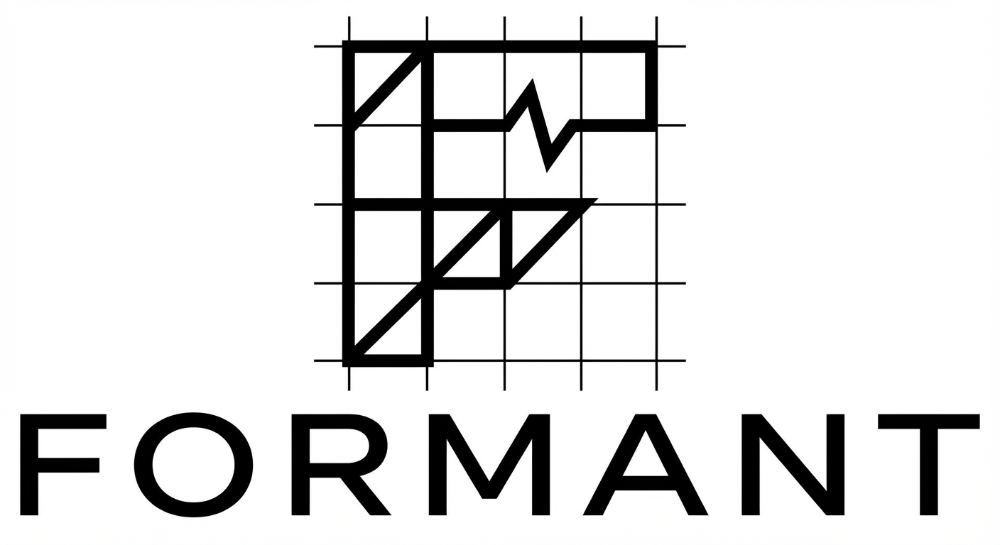
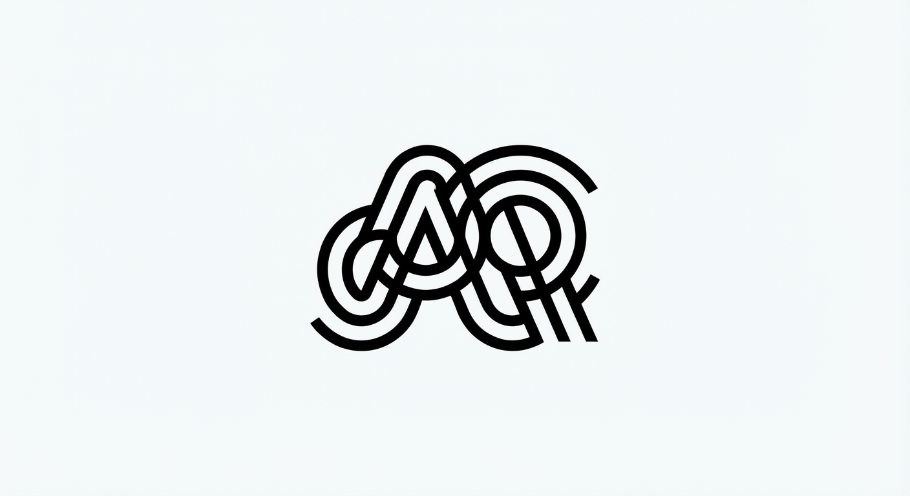
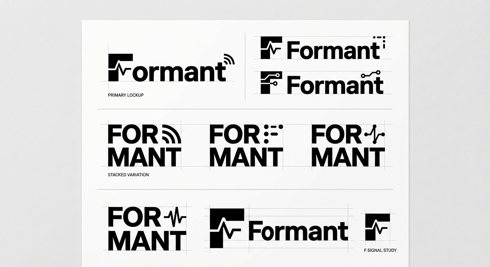

A visual and verbal identity for a company that sees the physical world in ways others don't yet understand.
For a decade, AI transformed digital work. Physical operations — the machines, fleets, and field systems that keep the world running — were left behind. Formant closes that gap. Not with noise, but with precision: AI agents that see across people, machines, and enterprise systems, act when they should, and escalate when they must.
A formant is the resonant frequency that gives a voice its character — the signal that makes it identifiable. We find the formant in physical operations: the pattern, the anomaly, the early indicator that only becomes obvious in retrospect. The name isn't explained. It's felt.
// A note on mystery —
The brand should intrigue before it explains. We want the reaction "what do they do?" followed immediately by "I need to find out." Precision that implies depth. Competence that doesn't announce itself. The withholding is deliberate — it signals that what Formant knows is earned, not marketed.
Everything is specific. Not "AI-powered" — "An agent that monitors 47 sensor streams and escalates the one that matters."
Confidence doesn't require volume. We don't shout. We state. The work speaks; the brand frames it.
The brand withholds just enough to pull you forward. You want to understand it. That pull is by design.
We live in the real world. Our images, our language, our aesthetic all reflect things that exist in physical space — machines, people, consequence.
Near-black and white form the foundation — photographic, not digital. The signal red is used sparingly: status, emphasis, the thing that matters. Never decorative.
Usage rule: 90% black/grey/white. Signal appears when something needs to be seen.
Never use signal decoratively. It means something when it appears.
IBM Plex Sans for reading and interface. IBM Plex Mono for data, labels, and technical contexts. The pairing has Rams-adjacent Swiss rationality with the legibility of something designed to actually be used.
Machines shot like portraits. The Hasselblad 500C/M with Kodak Tri-X sets the register: square format or cinematic crop, visible grain, high contrast, deliberate light. Not product photography. Not lifestyle. Documentary.


Direction notes:
— B&W primary. Color only when the subject demands it.
— Grain is intentional. Do not smooth. It is the texture of reality.
— Avoid: blue-tinted studio shots, hero poses, stock photography aesthetics.
— Subjects: robots, sensors, field equipment, control rooms, people at work.
— Lighting: available light preferred. Single hard source when lit.
— The image should feel like it was taken by someone who cared.
Declarative, not explanatory. Confident without announcement. The brand withholds just enough to pull people forward. Precision implies depth — we don't over-explain because we don't need to.
Our AI-powered platform leverages machine learning to proactively identify potential issues in your robotic fleet before they become problems.
We see the failure before it happens. Usually by a day.
Formant is the leading cloud robotics platform trusted by enterprises worldwide to optimize their physical operations at scale.
Physical operations have been running on guesswork. We end that.
Get started today with our easy-to-use platform and see results immediately!
When you're ready to know what's happening before it happens, we're here.
The brand should intrigue before it explains. Don't rush to clarify. A prospect asking "wait, what exactly do they do?" is already engaged. The answer, when it comes, lands harder. Formant knows something. The brand communicates that without saying it.
How the system behaves in the wild — hero moments, data contexts, and the data readout aesthetic that reflects the Teenage Engineering / Rams rationality.
The existing F-mark has bones. Working toward a version that holds at 16px on screen, reads on a hardware label, and carries the same character as the rest of the system. These are directional, not final.
Note: These are type-based explorations using the brand system. A proper logo mark — with the existing F geometry tightened and systematized — is the next step. The signal-red F weight differentiation is a direction worth exploring.
Three directions generated and evaluated. The emerging north star: an F letterform with a signal waveform integrated into its form — arrived at independently by two different prompts. The bottom-right "F Signal Study" in v3 is the strongest mark.

Strong concept — F built on construction grid with signal anomaly notched in. Too much noise at this scale; the underlying form is worth pursuing. Remove the grid lines, tighten the F geometry.

Too decorative, too tangled. Doesn't read at small sizes. The waveform-as-abstract-mark direction loses the clarity of the F anchor. Not Formant.

Bottom-right "F Signal Study" is the strongest mark. Bold F with a waveform cut through it — distinctive, scales down, the waveform IS the concept. The waveform integrated into the counter of the F. Next step: vector refinement in SVG.
An F letterform. A signal waveform integrated into its geometry — not applied on top, but structurally part of it. The form suggests both the name and the capability simultaneously. Simple enough to engrave on hardware. Distinctive enough to own.